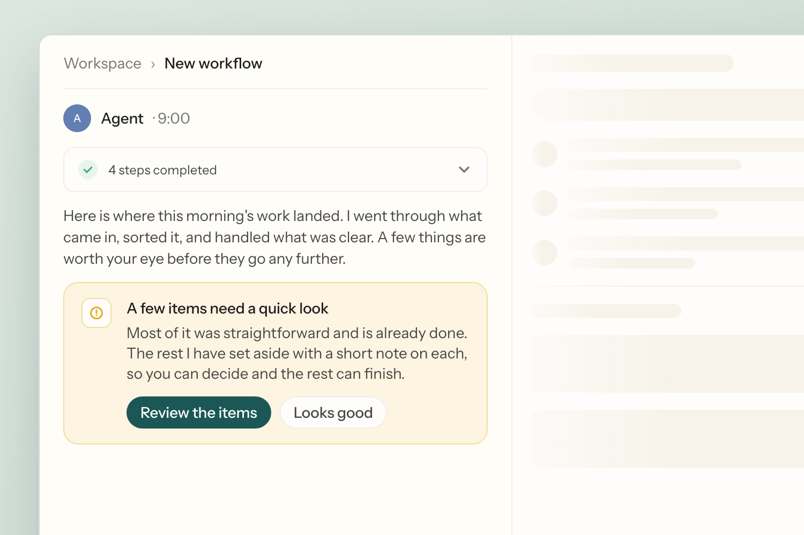
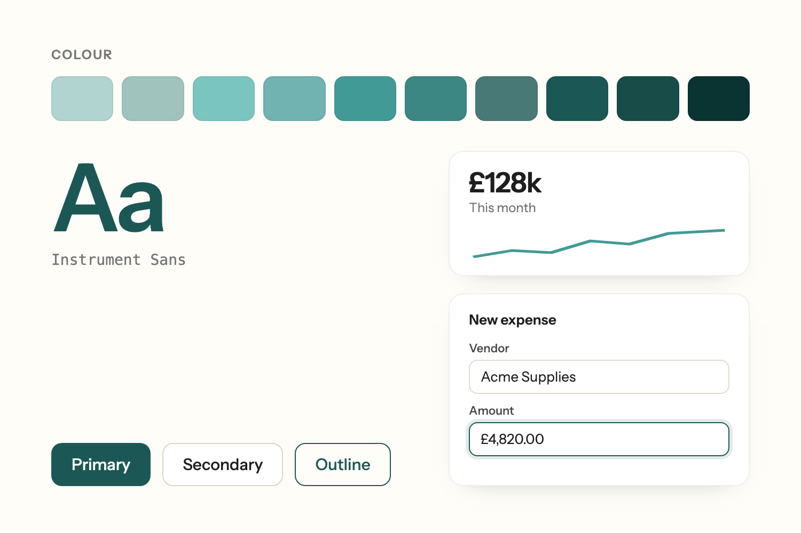

AI product designer, working from human behaviour to systems.
My experience designing AI products is grounded in the way people use them, how they think, what they trust, and how technology changes the way they work. Psychology graduate, artist for fun, and learning to code along the way :)
Selected Work
Led the design for how work gets defined and run against real tools in an early-stage AI product, enabling user trust and control.

Created an early-stage AI company's design system in Figma and Storybook, evolving it to written systems documentation, cutting design→implementation cycles by weeks.

Redesigned a conceptual personal-style app from a social inspiration feed into an AI stylist that builds outfits from the clothes you already own, solving for personalised styling with the least possible friction.